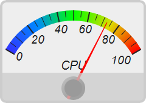
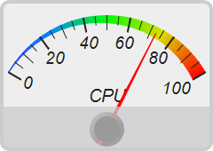
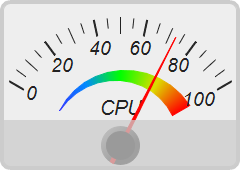
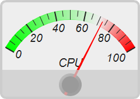
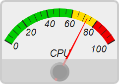
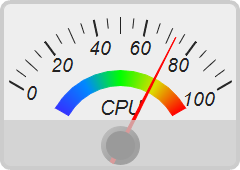

This example demonstrates rectangular angular meters.
The angular span of the meter scale in this example is from -60 to 60 degrees, which is one third of a circle. The meter is configured to have a rectangular frame with rounded corners. A semi-transparent rectangle is put at the bottom of the meter to create the object that covers the meter cap. The rectangle is created by using
BaseChart.addText to create an empty text box, and then use
Box.setSize and
Box.setBackground to configure it to have the proper size and color.
The following is the command line version of the code in "cppdemo/rectangularmeter". The MFC version of the code is in "mfcdemo/mfcdemo". The Qt Widgets version of the code is in "qtdemo/qtdemo". The QML/Qt Quick version of the code is in "qmldemo/qmldemo".
#include "chartdir.h"
void createChart(int chartIndex, const char *filename)
{
// The value to display on the meter
double value = 72.55;
// Create an AngularMeter object of size 240 x 170 pixels with very light grey (0xeeeeee)
// background, and a rounded 4-pixel thick light grey (0xcccccc) border
AngularMeter* m = new AngularMeter(240, 170, 0xeeeeee, 0xcccccc);
m->setRoundedFrame(Chart::Transparent);
m->setThickFrame(4);
// Set the default text and line colors to dark grey (0x222222)
m->setColor(Chart::TextColor, 0x222222);
m->setColor(Chart::LineColor, 0x222222);
// Center at (120, 145), scale radius = 128 pixels, scale angle -60 to +60 degrees
m->setMeter(120, 145, 128, -60, 60);
// Meter scale is 0 - 100, with major/minor/micro ticks every 20/10/5 units
m->setScale(0, 100, 20, 10, 5);
// Set the scale label style to 14pt Arial Italic. Set the major/minor/micro tick lengths to
// 16/16/10 pixels pointing inwards, and their widths to 2/1/1 pixels.
m->setLabelStyle("Arial Italic", 14);
m->setTickLength(-16, -16, -10);
m->setLineWidth(0, 2, 1, 1);
// Demostrate different types of color scales and putting them at different positions
double smoothColorScale[] = {0, 0x3333ff, 25, 0x0088ff, 50, 0x00ff00, 75, 0xdddd00, 100,
0xff0000};
const int smoothColorScale_size = (int)(sizeof(smoothColorScale)/sizeof(*smoothColorScale));
double stepColorScale[] = {0, 0x00cc00, 60, 0xffdd00, 80, 0xee0000, 100};
const int stepColorScale_size = (int)(sizeof(stepColorScale)/sizeof(*stepColorScale));
double highLowColorScale[] = {0, 0x00ff00, 70, Chart::Transparent, 100, 0xff0000};
const int highLowColorScale_size = (int)(sizeof(highLowColorScale)/sizeof(*highLowColorScale));
if (chartIndex == 0) {
// Add the smooth color scale at the default position
m->addColorScale(DoubleArray(smoothColorScale, smoothColorScale_size));
} else if (chartIndex == 1) {
// Add the smooth color scale starting at radius 128 with zero width and ending at radius
// 128 with 16 pixels inner width
m->addColorScale(DoubleArray(smoothColorScale, smoothColorScale_size), 128, 0, 128, -16);
} else if (chartIndex == 2) {
// Add the smooth color scale starting at radius 70 with zero width and ending at radius 60
// with 20 pixels outer width
m->addColorScale(DoubleArray(smoothColorScale, smoothColorScale_size), 70, 0, 60, 20);
} else if (chartIndex == 3) {
// Add the high/low color scale at the default position
m->addColorScale(DoubleArray(highLowColorScale, highLowColorScale_size));
} else if (chartIndex == 4) {
// Add the step color scale at the default position
m->addColorScale(DoubleArray(stepColorScale, stepColorScale_size));
} else {
// Add the smooth color scale at radius 60 with 15 pixels outer width
m->addColorScale(DoubleArray(smoothColorScale, smoothColorScale_size), 60, 15);
}
// Add a text label centered at (120, 120) with 15pt Arial Italic font
m->addText(120, 120, "CPU", "Arial Italic", 15, Chart::TextColor, Chart::BottomCenter);
// Add a red (0xff0000) pointer at the specified value
m->addPointer2(value, 0xff0000);
// Add a semi-transparent light grey (0x3fcccccc) rectangle at (0, 120) and of size 240 x 60
// pixels to cover the bottom part of the meter for decoration
TextBox* cover = m->addText(0, 120, "");
cover->setSize(240, 60);
cover->setBackground(0x3fcccccc);
// Output the chart
m->makeChart(filename);
//free up resources
delete m;
}
int main(int argc, char *argv[])
{
createChart(0, "rectangularmeter0.png");
createChart(1, "rectangularmeter1.png");
createChart(2, "rectangularmeter2.png");
createChart(3, "rectangularmeter3.png");
createChart(4, "rectangularmeter4.png");
createChart(5, "rectangularmeter5.png");
return 0;
}
© 2023 Advanced Software Engineering Limited. All rights reserved.